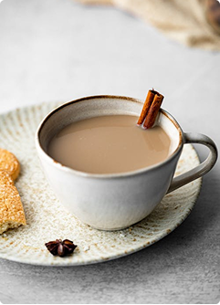
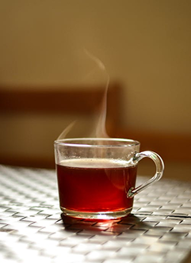

Curiosidades sobre alimentação
Suar emagrece?
O que você
precisa saber
-
1.Por que transpiramos?
Transpiramos para regular a temperatura corporal. Quando o corpo esquenta (por exercícios ou calor), as glândulas sudoríparas liberam suor, que ajuda a resfriar o corpo.
-
2.Suar emagrece?
Não diretamente. O suor não queima calorias de forma significativa. Ele pode até utilizar uma pequena quantidade de energia, mas a queima de calorias está mais ligada à intensidade e duração do exercício, e não à quantidade de suor.
-
3.Qual a função do suor?
A função principal do suor é prevenir o superaquecimento, resfriando o corpo enquanto evapora da pele. Não é um mecanismo para perder peso.
-
5.Cuidados com a hidratação
Suar demais pode levar à desidratação, que causa cãibras, fadiga e até problemas mais graves.
Veja também
-

Curiosidade
-
Dicas
-

Questionarios
-

Receitas saudáveis